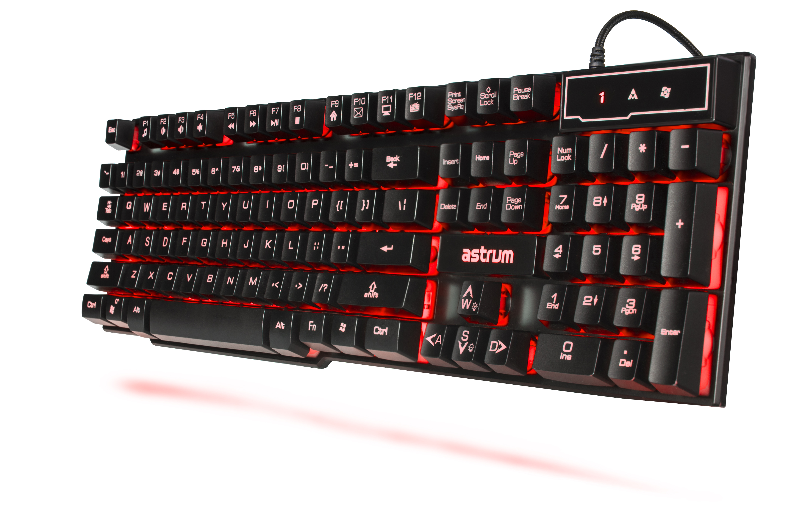

In today's fast-paced digital world, effective typing skills are crucial for productivity and efficiency. Whether you're a student, a professional, or just someone who spends a significant amount of time on a computer, improving your typing speed and accuracy can have a substantial impact on your daily tasks. Here are seven practical ways to enhance your keyboard prowess.
Table of Content
______________________________________________________________________________
______________________________________________________________________________
1. Regular Practice Sessions:
Like any skill, typing improves with consistent practice. Dedicate time each day to hone your typing skills. You can find various online typing tutorials and games designed to enhance your speed and accuracy. These resources provide a structured approach to learning and gradually increase difficulty as you progress.
2. Learn Touch Typing:

Touch typing involves using all fingers without looking at the keyboard. This technique not only improves your speed but also boosts accuracy. Numerous online courses and typing software are available to help you learn touch typing. The initial phase may seem challenging, but with regular practice, you'll soon find yourself typing without glancing at the keys.
3. Finger Placement Awareness:

Onlinetyping.org, CC BY-SA 4.0, via Wikimedia Commons
Being aware of proper finger placement on the keyboard is crucial for both speed and accuracy. Each finger should have a designated set of keys to cover. Familiarize yourself with the home row keys and the corresponding fingers. This foundational understanding forms the basis for touch typing and minimizes unnecessary movements.
4. Use Keyboard Shortcuts:
Learning and incorporating keyboard shortcuts into your workflow can significantly enhance your typing efficiency. Most software applications and operating systems have a range of keyboard shortcuts designed to streamline tasks. Memorizing these shortcuts can save time and reduce the need for excessive typing. The image above contains some useful shortcuts for windows, it might be useful for you.
5. Increase WPM (Words Per Minute) Gradually:
Rather than pushing yourself to type as fast as possible, focus on gradually increasing your words-per-minute rate. This approach helps you maintain accuracy while steadily improving speed. Set realistic goals for yourself and monitor your progress regularly. There are online typing tests that can assess your WPM and provide insights into areas for improvement. And there are a lot of websites where you can see your WPM level.
6. Get a Good Keyboard:
Gjordan3, CC BY-SA 4.0, via Wikimedia Commons
Invest in a quality keyboard that suits your typing style and preferences. A comfortable and responsive keyboard can make a significant difference in your typing experience. Mechanical keyboards, for example, provide tactile feedback and are known for their durability. Choose a keyboard that feels comfortable to type on and supports your efforts to boost speed and accuracy.
7. Utilize Typing Games:
Turn your practice sessions into an enjoyable experience by incorporating typing games into your routine. These games are designed to make learning fun while challenging you to improve your typing skills. Many of them are freely available online and cover a variety of genres, catering to different skill levels.
Conclusion
Improving your typing speed and accuracy is a valuable investment of time and effort. By incorporating these seven strategies into your routine, along with investing in a good keyboard, you can develop the skills necessary to navigate the digital landscape with ease.


{kind=link}
{kind=link}